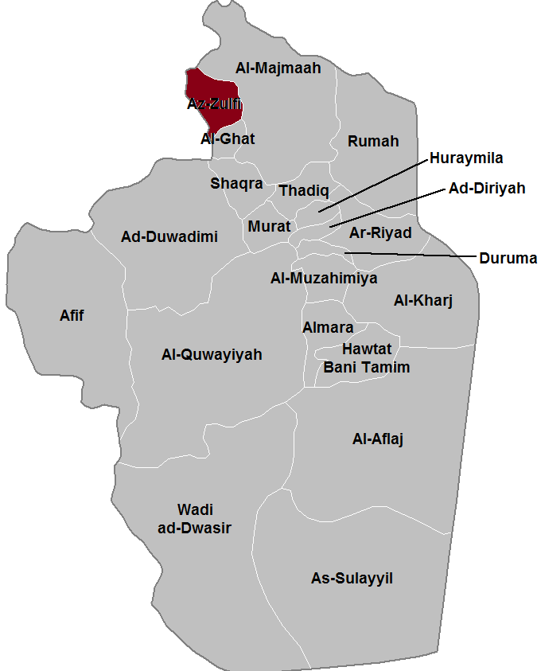
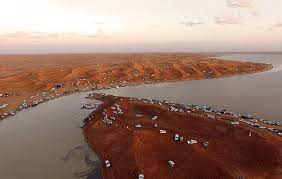

Location
Az Zulfi is in the East of Al-Qassim Province and at the heart of the historical region of Najd. It is located roughly 70kilometers from Buraydah (the capital of the province) and more than 290 kilometers north of the Saudi capital, Riyadh.
History
Early history
Although the location is sometimes identified with an ancient settlement mentioned
by Yaqut and Al-Hamadani known as Oryarh, the history of Zulfi proper dates back to
the third[clarification needed] century. According to the chroniclers of Nejd.
During the Pre-Islamic era the settlement at the site was called zulifit or alkrm
(Arabic: الزلفات و الكَرَمُ), and was reportedly founded by the tribe of
Banu Hanifa and Banu tmym. Hajr served as the capital of the province of Al
Yamamah, whose governors were responsible for most of central and eastern Arabia
during the Umayyad and Abbasid eras. Al-Yamamah broke away from the Abbasid Empire
in 866 and the area fell under the rule of the Ukhaydhirites, who moved the capital
from Hajr to nearby Al Kharj. The city then went into a long period of decline.
In the 14th century, North African traveller Ibn Battuta wrote of his visit to Hajr,
describing it as "the main city of Al-Yamamah, and its name is Hajr".
Ibn Battuta goes on to describe it as a city of canals and trees with most of its
inhabitants belonging to Bani Hanifa, and reports that he continued on with their
leader to Mecca to perform the Hajj.
Later on, Hajr broke up into several separate settlements and estates.
The most notable of these were Migrin (or Muqrin) and Mi'kal, though the name
Hajr continued to appear in local folk poetry. The earliest known reference to
the area by the name Riyadh comes from a 17th-century chronicler reporting on an
event from the year 1590. In 1737, Deham ibn Dawwas, a refugee from neighboring
Manfuha, took control of Riyadh. Ibn Dawwas built a single wall to encircle the
various quarters of Riyadh, making them effectively a single town.
Geography
Al Zulfi lies in the northern-central region of the Najd and to the south of the Sheayb Samnan (Samnan Valley), which is the longest valley on the Zulfi. It is surrounded by sand dunes to its north and west, which are known locally as the Al-Thoyr Sands. The Al-sabalh Woods are located to the north of the city. Next to Al Zulfi is the Al-Kasar Rain lake (or Bohyrat Al-Kasar), which is considered an official part of the city.
Climate
Being in the middle of the Arabian desert, Al Zulfi experiences extremely
hot summers and relatively cool winters. Humidity is low though throughout the year.
The minimum temperature in the summer ranges between 35 and 42 degrees Celsius.
The species Bunopus spatalurus spatalurus of the Bunopus genus of small geckos was
described in 1991 as being endemic to the area.
In Al Zulfi, there is a desert climate. Most rain falls in the winter.
The Köppen-Geiger climate classification is BWh. The average annual
temperature in Al Zulfi is 24.2 °C (75.6 °F). About 211 mm (8.31 in) of
precipitation falls annually.
click here to view places
 0545651507
0545651507 info@explorksa.com
info@explorksa.com